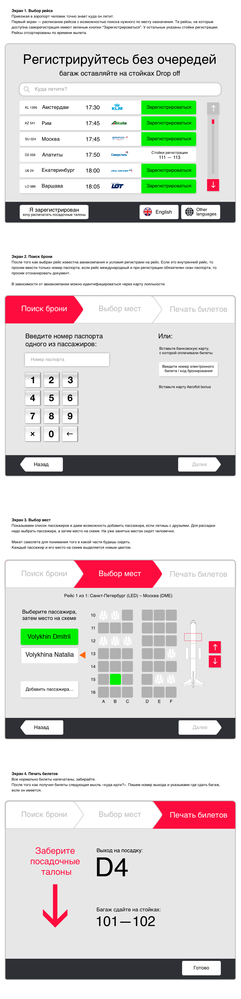

Наталия Волыхина
Портфолио
Интерфейс киоска саморегистрации в аэропорту
В июле 2016 года я делала вступительное задание в школу стажеров
Бюро
. Требовалось спроектировать интерфейс киоска саморегистраии в аэропорту.

 Наталия Волыхина
Портфолио
Наталия Волыхина
Портфолио